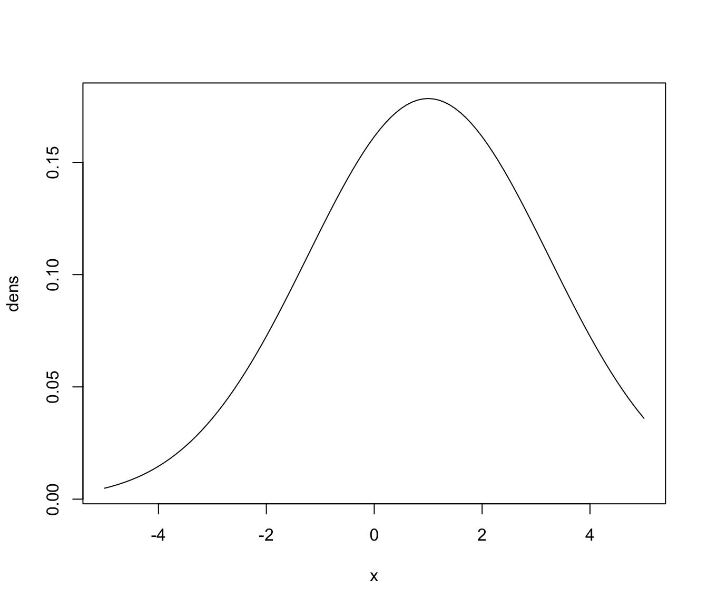
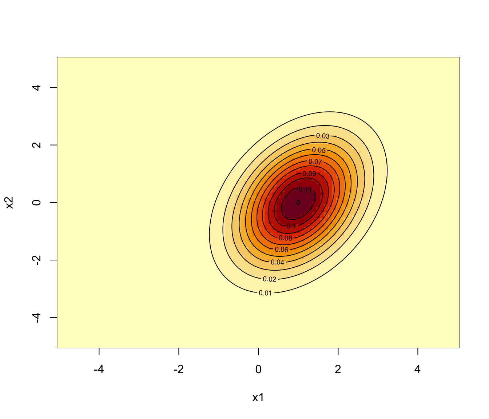

Density of multivariate Gaussian distribution
dmvnorm.RdEfficiently computes the density of observations for a generic multivariate Gaussian distribution.
Arguments
- data
A numeric vector, matrix, or data frame of observations. Categorical variables are not allowed. If a matrix or data frame, rows correspond to observations and columns correspond to variables.
- mean
A vector of means for each variable.
- sigma
A positive definite covariance matrix.
- log
A logical value indicating whether or not the logarithm of the densities should be returned.
Value
A numeric vector whose ith element gives the density of the
ith observation in data for the multivariate Gaussian
distribution with parameters mean and sigma.
Examples
# univariate
ngrid <- 101
x <- seq(-5, 5, length = ngrid)
dens <- dmvnorm(x, mean = 1, sigma = 5)
plot(x, dens, type = "l")

# bivariate
ngrid <- 101
x1 <- x2 <- seq(-5, 5, length = ngrid)
mu <- c(1,0)
sigma <- matrix(c(1,0.5,0.5,2), 2, 2)
dens <- dmvnorm(as.matrix(expand.grid(x1, x2)), mu, sigma)
dens <- matrix(dens, ngrid, ngrid)
image(x1, x2, dens)
contour(x1, x2, dens, add = TRUE)
